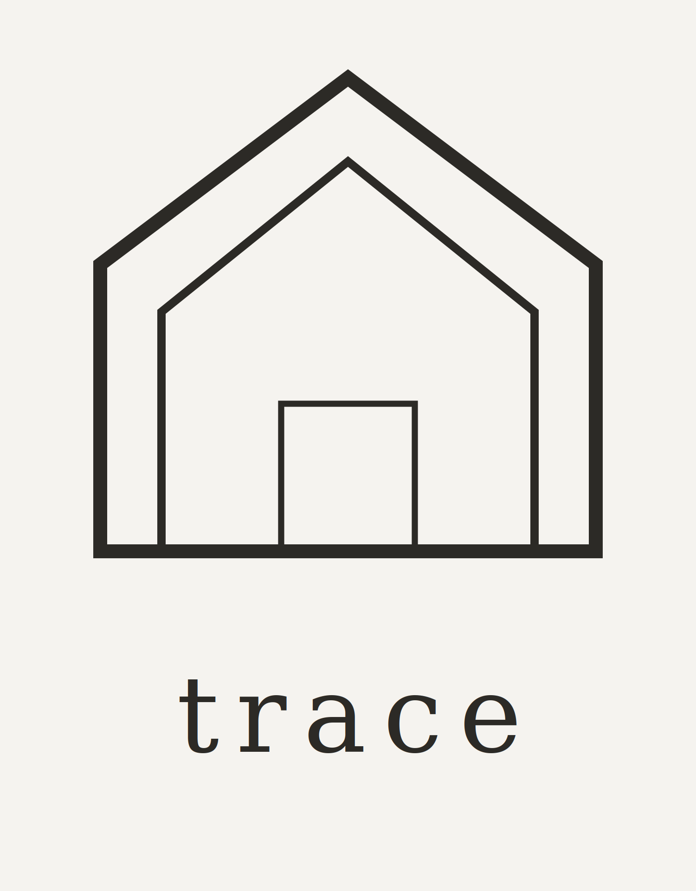

The Home Health Standard
Your home has
a health score.
We verify the products and materials in your home against independent certifications, not marketing claims.
In-person home visit · San Diego
A room-by-room walkthrough of your actual home
Starting at $250
- 60 to 90 minutes, at your own pace
- 60+ checkpoints, room by room
- Your Trace Score
- A full optimization plan with a timeline, within a week
- White-glove service available
Or email hello@tracehome.co. Local to San Diego and Southern California for now.
About Trace
Trace is a home health platform setting the standard for what’s actually in the spaces where people live, sleep, breathe and travel.
Most “clean” claims are self-reported: a brand’s own list, not independent verification. We check kitchen, bathroom, bedroom, laundry and nursery, and identify exactly what’s worth swapping and why, backed by independent certifications.
GOTS · EWG · NSF
Where Trace is going
- Home visitsAvailable now A real, room-by-room assessment in your home, with a written plan.
- Web appIn development The same assessment from your phone, with an instant score and plan.
- Verified by TraceIn development Independent verification for short-term rentals, so guests can see what’s in the space.
Follow along
Room-by-room swaps, real home visit footage, and the research behind every recommendation, on Instagram @tracehomeco.